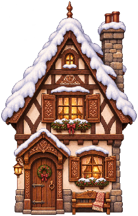
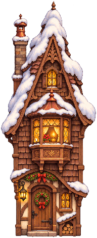
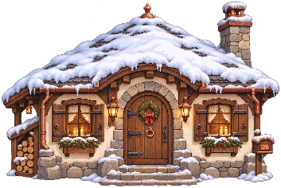
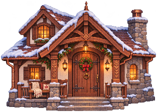
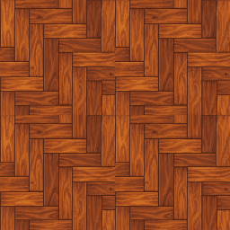
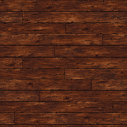
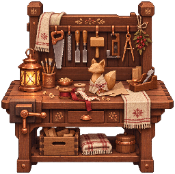
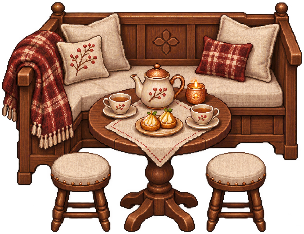

home-porch
173 × 297 px · 109 Kio
Présentation sur fond clair et sombre. Les parquets sont des textures opaques ; les meubles, fenêtres, murs et maisons sont détourés. Créations nouvelles soumises à validation artistique.
173 × 297 px · 109 Kio
408 × 279 px · 241 Kio

227 × 356 px · 169 Kio
283 × 288 px · 170 Kio
480 × 279 px · 282 Kio
296 × 263 px · 169 Kio

192 × 467 px · 178 Kio
371 × 230 px · 190 Kio

353 × 236 px · 183 Kio
376 × 307 px · 243 Kio
200 × 271 px · 113 Kio
259 × 227 px · 131 Kio
361 × 255 px · 192 Kio

313 × 224 px · 162 Kio
335 × 242 px · 181 Kio
347 × 236 px · 180 Kio

256 × 256 px · 152 Kio

256 × 256 px · 179 Kio
388 × 113 px · 99 Kio
158 × 124 px · 51 Kio
273 × 274 px · 159 Kio
334 × 280 px · 188 Kio

256 × 254 px · 136 Kio

304 × 234 px · 159 Kio